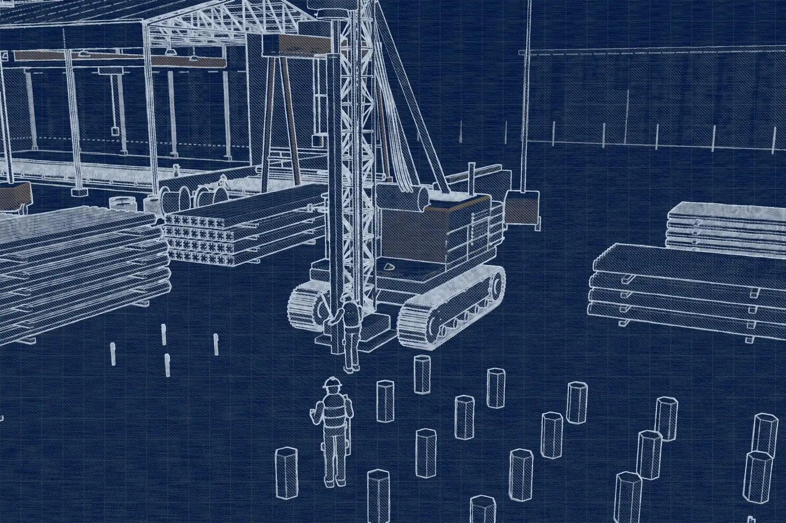
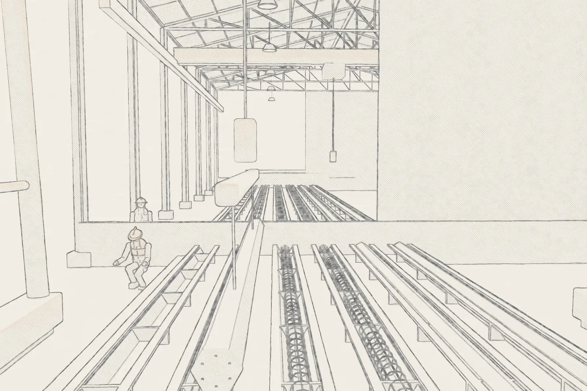

Canteiro limpo
Método de deslocamento: sem lama, sem retirada de terra e sem sobras de concreto.

Fundações
Uma solução de engenharia de alta eficiência, caracterizada pelo controle industrial e pela rapidez de execução.
O método
Diferente das estacas moldadas in loco, o método pré-fabricado transfere a complexidade executiva para a fábrica, garantindo um produto final com características mecânicas superiores.
Na IPR, transformamos o canteiro de obras em uma etapa de montagem técnica, eliminando os riscos e as variáveis comuns das fundações moldadas no solo.

Comparativo
Onde o controle industrial faz diferença na qualidade, no prazo e no canteiro.

Fabricação e cura controlada
Ao contrário do concreto lançado diretamente na terra, as estacas IPR são produzidas em moldes metálicos de alta precisão e submetidas a uma cura controlada.
Logística especializada
A fundação é o cronograma crítico de qualquer obra. Por isso investimos em logística integrada.

Por que a fundação IPR
O monitoramento contínuo durante a cravação permite a verificação da capacidade de carga em tempo real, com total transparência ao engenheiro responsável.
Método de deslocamento: sem lama, sem retirada de terra e sem sobras de concreto.
Nega e repique elástico medidos estaca a estaca e confrontados com o projeto.
Peças prontas e curadas: a obra não espera concreto ganhar resistência.
Cada estaca vinculada aos ensaios do seu lote de concreto.
Orçamento técnico
Fale com nossos especialistas e solicite um orçamento técnico para o seu projeto. Envie a sondagem SPT e as cargas de projeto para agilizar a análise.